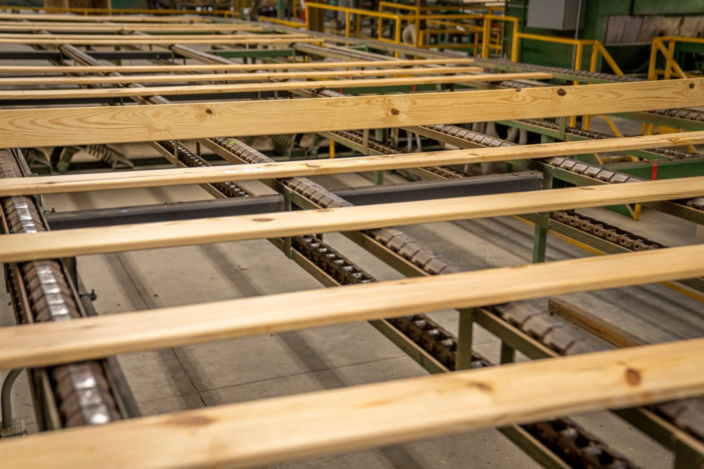

Modular vs Manufactured Homes
Both are built in a factory, but they follow different codes, sit on different foundations, and hold their value very differently. The distinction most people get wrong, explained.

They sound like the same thing, and both are built indoors on a factory line, but modular and manufactured homes are legally and financially quite different animals. The distinction comes down to three things: the building code they follow, the foundation they sit on, and how their value holds over time.
Key takeaways
- Both are built in a factory. That is not the difference. The difference is the code, the chassis, and how the law files the paperwork.
- Modular follows local building code and sits on a permanent foundation, so it is real estate, full stop.
- Manufactured follows one national HUD code and keeps a steel chassis, which usually makes it personal property.
- That one word, "personal", costs about two percentage points on the loan and can flip a home from appreciating to depreciating.
- But the depreciation story is not a law of physics. On owned land, manufactured homes have tracked site-built appreciation almost exactly since 2000.
The full breakdown
| Factor | Modular | Manufactured |
|---|---|---|
| Building code | 🟢 Local codes (like site-built) | 🟡 Single national (HUD) code |
| Chassis | 🟢 None; set on foundation | 🔴 Permanent steel chassis |
| Foundation | 🟢 Permanent foundation | 🟡 Often piers + skirting |
| Cost | 🟡 Higher | 🟢 Cheapest per sq ft |
| Resale / value | 🟢 Appreciates like a house | 🔴 Can depreciate |
| Financing | 🟢 Standard mortgage | 🔴 Often harder / different loan |
| Looks like site-built | 🟢 Yes | 🟢 Modern ones, yes |

The one word that actually decides it
Here is the part nobody explains clearly, and it matters more than any spec sheet. What drives the money is not how the house was built. It's how it gets classified.
- Real property means the home is legally part of the land. Conventional 30-year mortgages. Values track the local housing market, historically somewhere around 2 to 4 percent a year.
- Personal property means the home is a titled object sitting on land, more like a very large appliance. Chattel loans only. Values commonly slide 3 to 5 percent a year, the way a vehicle does.
Modular homes land in the first bucket almost automatically. Manufactured homes land in the second one unless you own the land and permanently affix the house. Same factory, same steel, wildly different ten-year outcome.
The data that complicates the story
And now the part that should stop you from writing manufactured homes off entirely, because we nearly did.
Federal Housing Finance Agency data covering 2000 to 2024 puts appreciation of manufactured homes on owned land at 211.8 percent, against 212.6 percent for site-built homes. That is not "close." That is a rounding error. Since 2014, manufactured homes have frequently outpaced traditional ones.
So which is it?
Both, and they are not in conflict. Manufactured homes depreciate when they are titled as personal property in a rented park. They appreciate roughly like houses when they sit on land you own. The building didn't change. The ownership structure did. If someone tells you "mobile homes always lose value," they are describing a financing arrangement and calling it a material.
What the financing gap actually costs
Around 42 percent of manufactured home loans are chattel loans, according to the CFPB. Chattel means the lender has a lien on the house but not the land, so their collateral is weaker and they price accordingly.
| Modular / real property | Manufactured / chattel | |
|---|---|---|
| Typical 2026 rate | 6 to 7% | 7.5 to 10%+ |
| Federal Reserve average | 6.81% | 8.69% |
| Term | 30 years | 15 to 23 years |
| Median borrower credit score | 739 site-built · 691 MH mortgage | 676 |
| If repossessed | Formal foreclosure process | Personal property rules. Faster, fewer protections. |
Run it on a real number. Borrow $75,000 at 9 percent over 20 years and you pay about $675 a month. The same $75,000 at 7 percent over 30 years is about $499. The cheaper house has the more expensive loan, and the gap compounds for two decades.
There is an exit. Retitling as real property unlocks proper mortgages, but it requires owning the land, being willing to encumber it, and permanently affixing the home. Plenty of chattel borrowers can't meet all three, which is exactly why they were on a chattel loan to begin with.
Wind zones, if you're anywhere near a hurricane
This one is short, specific, and genuinely load-bearing. Manufactured homes are built to a HUD wind zone, and the zone is printed on a data plate.
| Zone | Designed for | Where |
|---|---|---|
| Zone I | Up to 70 mph | Most inland areas |
| Zone II | Up to 100 mph, 39 lb/sq ft | Most of Florida, much of the Gulf and Atlantic coast |
| Zone III | Up to 110 mph, strictest anchoring | South Florida, the Keys, parts of Louisiana |
The rules run one direction only: a Zone III home can be placed in a Zone I area, but a Zone I home cannot legally be placed in Zone II or III. These standards date to July 1994, written in the aftermath of Hurricane Andrew, which added stronger roof attachment, better wall-to-floor connections and tighter anchoring.
Practical tip: the HUD Compliance Certificate is a permanent label, usually inside the primary bedroom closet at eye level or in a kitchen cabinet. Before you buy anything in a coastal market, go read it. Homes with Zone I ratings still turn up for sale in hurricane country.
What each one costs in 2026
Modular runs roughly $80 to $175 per square foot installed, with custom work pushing to $250. Manufactured starts far lower, around $30 per square foot for the unit. On a 2,000 square foot modular you're looking at something like $160,000 to $320,000, land excluded.
The number that ruins budgets
That advertised "$50 to $100 a square foot" base module price represents at best 50 to 65 percent of what you'll actually spend. It excludes land, clearing and grading, the permanent foundation, utility connections, the crane, finish work beyond base spec, the driveway, the GC fee and permits. A useful planning split is 60/40: sixty percent factory, forty percent everything that happens on your dirt.
Against site-built, NAHB research for 2026 puts comparable modular 10 to 20 percent cheaper. Worth having in hand when you compare against our 2026 Panama build cost guide.
Picking between them
- Go modular for long-term value. It appreciates like a conventional house, finances with a standard mortgage, and sits on a permanent foundation from day one.
- Go manufactured for the lowest entry price, and then do the one thing that changes everything: put it on land you own and affix it permanently.
- Neither is the bad one. They optimize for different things. One buys value, the other buys access.
Where the tropics tip it
Both are uncommon in Panama and Costa Rica, where the industry builds in concrete and knows how to do it well. Either would likely arrive as an import, plus shipping, plus a crew learning a system on your house. That erases the manufactured price advantage almost entirely, which was the only argument it had.
Of the two, modular translates better: permanent, foundation-set, financeable, and specifiable in materials that survive humidity and termites. But be honest about the comparison. A well-built local concrete house, on local labor, with local parts availability, remains the practical path for most regional builds. Our alternative building methods guide puts all of it side by side.
Want a straight recommendation?
SORA builds fixed-price homes for foreign buyers in Panama and Costa Rica. We match the method and material to your site, budget, and how long you plan to keep the house, and tell you straight when the cheaper option is the smarter one.
See 2026 build costs →Frequently asked questions
What's the difference between a modular and a manufactured home?
Both are factory-built, but a modular home follows the same local codes as a site-built house and sits on a permanent foundation, while a manufactured home follows a single national code on a permanent steel chassis. Modular is generally treated like conventional real estate; manufactured is cheaper but can depreciate.
Is a modular home better than a manufactured home?
For long-term value, usually yes. Modular homes appreciate like conventional houses, finance with standard mortgages, and sit on permanent foundations. Manufactured homes win on lowest upfront cost. The better choice depends on whether you're optimizing for value or price.
Do modular and manufactured homes hold their value?
Modular homes generally appreciate like site-built houses, because they follow local codes on permanent foundations. Manufactured homes can depreciate, especially if not on owned land with a permanent foundation, which is a key financial difference.
Do manufactured homes always lose value?
No. They depreciate when titled as personal property in a rented community. On land you own, with the home permanently affixed, FHFA data from 2000 to 2024 shows appreciation of 211.8 percent against 212.6 percent for site-built. The classification drives the outcome, not the factory.
What is a chattel loan and why does it cost more?
It finances the home but not the land, so the lender's collateral is weaker. Expect roughly two percentage points more than a mortgage and a shorter term. The Federal Reserve puts the average at 8.69 percent against 6.81 percent.
How do I check a manufactured home's wind zone?
Find the HUD Compliance Certificate, a permanent data plate usually inside the primary bedroom closet at eye level or in a kitchen cabinet. A Zone I home cannot legally be placed in a Zone II or III area.
Sources & verification
Figures in this guide were checked against primary and authoritative sources on 13 September 2026. Codes, rates and costs change — always confirm current figures with the relevant authority or a licensed professional before acting.
- US Dept. of Housing and Urban Development — Manufactured Home Construction and Safety Standards (PDF)
- US Census Bureau — Manufactured Housing Survey
- Urban Institute — chattel lending and manufactured home borrowers
- FHFA data summary — manufactured vs site-built appreciation, 2000–2024
- HomeGuide — 2026 modular home cost data